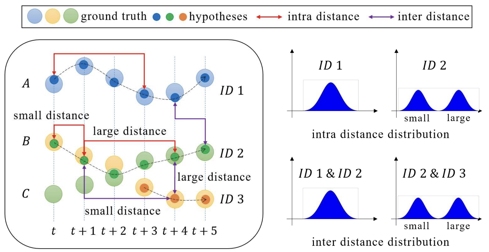

You can find my publications on my Google Scholar Profile
I am interested in efficient robot (or more broadly AI agents) learning by installing symbolic human knowledge into robots. Unlike the mainstream data-driven generalist approach, my work aims to develop adaptable, interpretable polices that are easy for the end users to customize.
|
Feiyu Zhu, Jean Oh, Reid Simmons Proceedings of the International Joint Conference on Artificial Intelligence (IJCAI), 2025 pdf / code Proposed an approach to make use of general domain knowledge to enable sample-efficient behavior cloning. Demonstrated the effectiveness and robustness of our approach in continuous environments with discrete and continuous action spaces with very few demonstrations. |
|
|
Feiyu Zhu School of Computer Science Honors Undergraduate Thesis, 2024 Formally defined a cognitive architecture. Showed how we can bootstrap its rules with a large language model and minimal human input. Collected a set of human preferences in the real world. Showed how the architecture we proposed can adapt to those preferences in one shot. |
|
|
Feiyu Zhu, Reid Simmons Proceedings of the AAAI Conference on Artificial Intelligence, 2024 pdf / appendix / code 🏆 Oral Presentation Proposed an agent framework that combines LLMs with customized cognitive architecture. Demonstrated how it can learn to perform various kitchen tasks from bootstrapping. Show that, when applied to new environments, it requires significantly fewer tokens than querying LLM for actions. |
|
|  |
Yanru Huang, Feiyu Zhu, Zheni Zeng, Xi Qiu, Yuan Shen, Jianan Wu, Proceedings of the IEEE/CVF Conference on Computer Vision and Pattern Recognition (CVPR), 2020 Showed that feature distance distributions can reflect trajectory hypotheses quality. Proposed a self quality evaluation metric SQE based on two-class Gaussian mixture model, which can primarily fulfill the self-evaluation desire. Tested the effectiveness of our method on various data sets and note its drawbacks. |